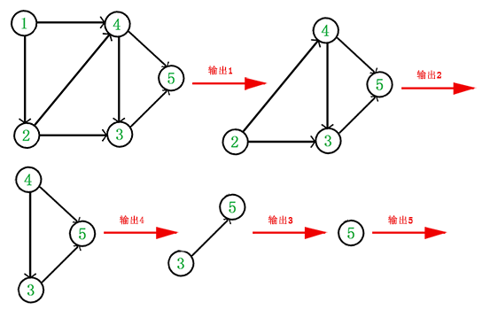

补充资料
F08【模板】AC自动机——信息学竞赛算法_哔哩哔哩_bilibili
https://www.cnblogs.com/ailanxier/p/13370753.html
https://www.cnblogs.com/hyfhaha/p/10802604.html
AC自动机¶
ACAM。
单模式串，多询问串
多模式串，多询问串请见字典树
百科介绍¶
一个常见的例子就是给出n个单词，再给出一段包含m个字符的文章，让你找出有多少个单词在文章里出现过。 要搞懂AC自动机，先得有模式树（字典树）Trie和KMP模式匹配算法的基础知识。AC自动机算法分为三步：构造一棵Trie树，构造失败指针和模式匹配过程。 如果你对KMP算法了解的话，应该知道KMP算法中的next函数（shift函数或者fail函数）是干什么用的。KMP中我们用两个指针i和j分别表示，A[i-j+ 1..i]与B[1..j]完全相等。也就是说，i是不断增加的，随着i的增加j相应地变化，且j满足以A[i]结尾的长度为j的字符串正好匹配B串的前 j个字符，当A[i+1]≠B[j+1]，KMP的策略是调整j的位置（减小j值）使得A[i-j+1..i]与B[1..j]保持匹配且新的B[j+1]恰好与A[i+1]匹配，而next函数恰恰记录了这个j应该调整到的位置。同样AC自动机的失败指针具有同样的功能，也就是说当我们的模式串在Trie上进行匹配时，如果与当前节点的关键字不能继续匹配，就应该去当前节点的失败指针所指向的节点继续进行匹配。

构建¶
1 ．构造 Trie 树
我们先用 n 个模式串构造一颗 Trie树
Trie 中的一个节点表示一个从根到当前节点的字符串
根节点表示空串，如果节点是个模式串，则打个标记$ cnt_u=1$
建字典树
void add(char s[]) {
int now=1,l=strlen(s);
for(int i=0; i<l; i++) {
int ch=s[i]-'a';
if(!trie[now].nxt[ch]) {
cnt++;
trie[now].nxt[ch]=cnt;
}
now=trie[now].nxt[ch];
}
trie[now].flag++; //根据需求变化flag所存的信息
}
2 ．构造自动机在 Trie 上构建两类边：回跳边和转移边。
求Fail指针
注意考虑fail指针的意义
fail[v] 存节点 v 的回跳边的终点。 回跳边指向父节点的回跳边所指节点的儿子0四个点（ v, u, fail[u], ch[][]) 构成四边形回跳边所指节点一定是当前节点的最长后缀。

如图，v=7,u=6。那么我们通过v访问u后沿着u往其fail走到x=fail[u]。此时如果存在x→son(x)和u→v所指代的字符相同，那么就链接fail[v]=son(x)，形成了一个四边形。
ch[u][i]存节点 u 的树边的终点和节点 u 的转移边的终点。 所谓转移边，就是从u连向所有的son(fail[u])。那么它和回调边有什么区别呢？
回跳边是在当前u的下一个字母失配时快速转移的边，而转移边是在当前u已经是一个被匹配的字符串时，要快速转移到下一个以u为前缀的待匹配字符串。
queue<int> q;
void getFail() { //求出Fail指针
for(int i=0; i<26; i++)trie[0].nxt[i]=1;
q.push(1);
trie[1].fail=0;
while(q.size()) {
int u=q.front();
q.pop();
for(int i=0; i<26; i++) {
int v=trie[u].nxt[i],fail=trie[u].fail;
if(!v) {
trie[u].nxt[i]=trie[fail].nxt[i];
continue;
}
trie[v].fail=trie[fail].nxt[i];
q.push(v);
}
}
}
3 ，扫描主串匹配
查询
查找出现了几个单词（多个相同的单词算一个）扫描主串，依次取出字符 s[i] ，
1 ． v 指针走主串对应的节点，沿着树边或转移边走，保证不回退
2 、 k 指针沿着囗跳边搜索模式串每次从当前节点走到根节点，把当前节点中的所有后缀模式串一网打尽，保证不漏解
3 、扫描完主串，返回答案0算法一边走串，一边把当前串的所有后缀串搜出来.
int query(char s[]) {
int u=1,ans=0,l=strlen(s);
for(int i=0; i<l; i++) {
int v=s[i]-'a',k=trie[u].nxt[v];
while(k>1&&trie[k].flag!=-1) {
ans+=trie[k].flag,trie[k].flag=-1;//因为多个相同的单词算一个，所以这里要青空并且标记-1表示改单词已经被统计过了
k=trie[k].fail;
}
u=trie[u].nxt[v];
}
return ans;
}
优化¶
有些时候，普通的AC自动机可能会TLE，这个时候我们就需要一点点优化
拓扑建图优化 让我们把Trie上的fail都想象成一条条有向边，那么我们如果在一个点对那个点进行一些操作，那么沿着这个点连出去的点也会进行操作（就是跳fail），所以我们才要暴力跳fail去更新之后的点。

我们先找到了编号4这个点，编号4的fail连向编号7这个点，编号7的fail连向编号9这个点。那么我们要更新编号4这个点的值，同时也要更新编号7和编号9，这就是暴力跳fail的过程。
我们下一次找到编号7这个点，还要再次更新编号9，所以时间复杂度就在这里被浪费了。
那么我们可不可以在找到的点打一个标记，最后再一次性将标记全部上传 来 更新其他点的ans 。例如我们找到编号4，在编号4这个点打一个ans标记为1，下一次找到了编号7，又在编号7这个点打一个ans标记为1，那么最后，我们直接从编号4开始跳fail，然后将标记ans上传，((点i的fail)的ans)加上(点i的ans)，最后使编号4的ans为1，编号7的ans为2，编号9的ans为2，这样的答案和暴力跳fail是一样的，并且每一个点只经过了一次。
最后我们将有flag标记的ans传到vis数组里，就求出了答案。
请思考！
那么现在问题来了，怎么确定更新顺序呢？明显我们打了标记后肯定是从深度大的点开始更新上去的。
怎么实现呢？拓扑排序！
我们使每一个点向它的fail 指针连一条边，明显，每一个点的出度为1 （fail只有一个），入度可能很多，所以我们就不需要像拓扑排序那样先建个图了，直接往fail 指针跳就可以了。
最后我们根据fail 指针建好图后（想象一下，程序里不用实现），一定是一个DAG，具体原因不解释（很简单的），那么我们就直接在上面跑拓扑排序，然后更新ans就可以了。
代码实现： 首先是getfail 这里，记得将fail的入度in更新。
在GetFail函数中
trie[v].fail=trie[fail].nxt[i];
in[trie[v].fail]++;
在query函数中
void query(char s[]){
int u=1,l=strlen(s);
for(int i=0;i<l;i++){
u=trie[u].nxt[s[i]-'a'],trie[u].ans++; //直接打标记就可以了
}
}
//对比下原来的
/*
int query(char s[]) {
int u=1,ans=0,l=strlen(s);
for(int i=0; i<l; i++) {
int v=s[i]-'a',k=trie[u].nxt[v];
while(k>1&&trie[k].flag!=-1) {
ans+=trie[k].flag,trie[k].flag=-1;
k=trie[k].fail;
}
u=trie[u].nxt[v];
}
return ans;
}
*/
然后是拓扑排序
void topsort(){
for(int i=1;i<=cnt;i++){if(!in[i])q.push(i);}
while(!q.empty()){
int u=q.front();q,pop();
vis[trie[u].flag]=trie[u].ans;
int v=trie[u].fail;in[v]--;
trie[v].ans+=trie[u].ans;
if(!in[v])q.push(v);
}
}
注释见大佬的...
void topu(){
for(int i=1;i<=cnt;++i)
if(in[i]==0)q.push(i); //将入度为0的点全部压入队列里
while(!q.empty()){
int u=q.front();q.pop();vis[trie[u].flag]=trie[u].ans; //如果有flag标记就更新vis数组
int v=trie[u].fail;in[v]--; //将唯一连出去的出边fail的入度减去（拓扑排序的操作）
trie[v].ans+=trie[u].ans; //更新fail的ans值
if(in[v]==0)q.push(v); //拓扑排序常规操作
}
}
拓扑排序¶
百科 对一个有向无环图(Directed Acyclic Graph简称DAG)G进行拓扑排序，是将G中所有顶点排成一个线性序列，使得图中任意一对顶点u和v，若边 \(<u,v>∈E(G)\) ，则u在线性序列中出现在v之前。通常，这样的线性序列称为满足拓扑次序(Topological Order)的序列，简称拓扑序列。简单的说，由某个集合上的一个偏序得到该集合上的一个全序，这个操作称之为拓扑排序。
拓扑排序常用来确定一个依赖关系集中，事物发生的顺序。例如，在日常工作中，可能会将项目拆分成A、B、C、D四个子部分来完成，但A依赖于B和D，C依赖于D。为了计算这个项目进行的顺序，可对这个关系集进行拓扑排序，得出一个线性的序列，则排在前面的任务就是需要先完成的任务。 注意：这里得到的排序并不是唯一的！就好像你早上穿衣服可以先穿上衣也可以先穿裤子，只要里面的衣服在外面的衣服之前穿就行。
实现
在图论中，拓扑排序（Topological Sorting）是一个有向无环图（DAG, Directed Acyclic Graph）的所有顶点的线性序列。且该序列必须满足下面两个条件：
-
每个顶点出现且只出现一次。
-
若存在一条从顶点 A 到顶点 B 的路径，那么在序列中顶点 A 出现在顶点 B 的前面。 有向无环图（DAG）才有拓扑排序，非DAG图没有拓扑排序一说。
例如，下面这个图：

它是一个 DAG 图，那么如何写出它的拓扑排序呢？这里说一种比较常用的方法：
从 DAG 图中选择一个 没有前驱（即入度为0）的顶点并输出。 从图中删除该顶点和所有以它为起点的有向边。 重复 1 和 2 直到当前的 DAG 图为空或当前图中不存在无前驱的顶点为止。后一种情况说明有向图中**必然存在环**。
于是，得到拓扑排序后的结果是 { 1, 2, 4, 3, 5 }。
通常，一个有向无环图可以有**一个或多个**拓扑排序序列。
void topu(){
for(int i=1;i<=n;i++)if(!in[i])q.push(i);//点的入度
while(q.size()){
int u=q.front();
cout<<u<<' ';//输出topu序
q.pop();
if(vis[u])continue;
vis[u]=1;
for(auto v:e[u]){
if(vis[v])continue;
in[v]--;
if(!in[v])q.push(v);
}
}
}
拓扑排序的应用
拓扑排序通常用来“排序”具有依赖关系的任务。
比如，如果用一个DAG图来表示一个工程，其中每个顶点表示工程中的一个任务，用有向边 表示在做任务 B 之前必须先完成任务 A。故在这个工程中，任意两个任务要么具有确定的先后关系，要么是没有关系，绝对不存在互相矛盾的关系（即环路）。 ———————————————— https://blog.csdn.net/lisonglisonglisong/article/details/45543451
例题 #1 AC 自动机（二次加强版）¶
题目描述
给你一个文本串 \(S\) 和 \(n\) 个模式串 \(T_{1 \sim n}\)，请你分别求出每个模式串 \(T_i\) 在 \(S\) 中出现的次数。
输入格式
第一行包含一个正整数 \(n\) 表示模式串的个数。
接下来 \(n\) 行，第 \(i\) 行包含一个由小写英文字母构成的非空字符串 \(T_i\)。
最后一行包含一个由小写英文字母构成的非空字符串 \(S\)。
数据不保证任意两个模式串不相同。
输出格式
输出包含 \(n\) 行，其中第 \(i\) 行包含一个非负整数表示 \(T_i\) 在 \(S\) 中出现的次数。
对于 \(100 \%\) 的数据，\(1 \le n \le 2 \times {10}^5\)，\(T_{1 \sim n}\) 的长度总和不超过 \(2 \times {10}^5\)，\(S\) 的长度不超过 \(2 \times {10}^6\)。
补充知识点¶
char* s和char s[]的区别：
https://blog.csdn.net/weibo1230123/article/details/80278828
注意¶
-
普通AC自动机时间复杂度过高
-
不保证任意两个模式串不相同,这道题有相同字符串要统计，所以我们用一个
web[]数组存这个字符串指的是Trie中的那个位置，最后把vis[web[i]]输出就OK了。
如果交【模板】AC 自动机（加强版）的代码只有44分
代码¶
//AC自动机优化模板
//AC自动机模板
#include<bits/stdc++.h>
using namespace std;
const int N=2e6+5;
int n,x,t,i,cnt,vis[N],ans,web[N],in[N];
char c[N];
struct node {
int nxt[27];
int fail,flag,ans;
void init() {
fail=flag=0;
memset(nxt,0,sizeof nxt);
}
} trie[N];
void add(char s[],int num) {
int now=1,l=strlen(s);
for(int i=0; i<l; i++) {
int ch=s[i]-'a';
if(!trie[now].nxt[ch]) {
cnt++;
trie[now].nxt[ch]=cnt;
}
now=trie[now].nxt[ch];
}
if(!trie[now].flag)trie[now].flag=num;
web[num]=trie[now].flag;
}
queue<int> q;
void getFail() { //求出Fail指针
for(int i=0; i<26; i++)trie[0].nxt[i]=1;
q.push(1);
trie[1].fail=0;
while(q.size()) {
int u=q.front();
q.pop();
for(int i=0; i<26; i++) {
int v=trie[u].nxt[i],fail=trie[u].fail;
if(!v) {
trie[u].nxt[i]=trie[fail].nxt[i];
continue;
}
trie[v].fail=trie[fail].nxt[i];
in[trie[v].fail]++;
q.push(v);
}
}
}
void query(char s[]) { //此次query是void类型
int u=1,l=strlen(s);
for(int i=0; i<l; i++) {
u=trie[u].nxt[s[i]-'a'],trie[u].ans++; //直接打标记就可以了
}
}
void topsort() {
for(int i=1; i<=cnt; i++) {
if(!in[i])q.push(i);
}
while(!q.empty()) {
int u=q.front();
q.pop();
vis[trie[u].flag]=trie[u].ans;
int v=trie[u].fail;
in[v]--;
trie[v].ans+=trie[u].ans;
if(!in[v])q.push(v);
}
}
void init() {
cnt=1;
}
signed main() {
cin>>n;
init();
for(int i=1; i<=n; i++)
scanf("%s",&c),add(c,i);
getFail();
char c2[N];
scanf("%s",&c2);
query(c2);
topsort();
for(int i=1; i<=n; i++)
cout<<vis[web[i]]<<endl;
return 0;
}